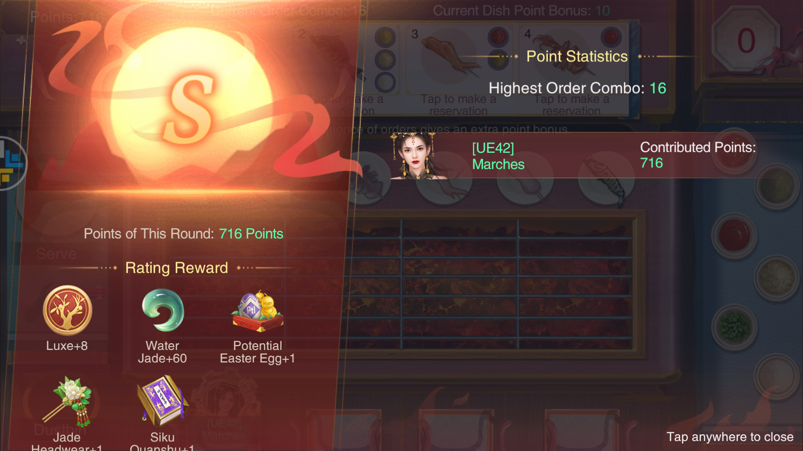

By [UE42] Marches, the best player ever. 🎉
The majority of players will never win an event; this is the reality of a pay-to-win game. Rather than celebrating VIP 10s who win yet again (and lamenting your lack of success), you should set achievable goals that you want to hit (e.g. powering unique ministers, doing well in your favourite events), and celebrate those who hit theirs.
Calculate how many Painting Boxes you will receive on the third day, and have the sum of that and how many you have remaining on the second day be a multiple of 10 - this means you will spend less time using your boxes on the final day, and so will win the tiebreaker between people who have the same score as you (since the tiebreaker is "who reached that score first?").
For example, a 0.99 recharge + gold Painting Boxes + activeness reward Painting Boxes will give you 17 per day. If you end the second day with 3, you will have 20 on the third day after you gain all of your boxes - this means you can use all of your boxes in two 10x paints. This is faster than the alternative, which would be painting with 17 boxes; one 10x paint, and seven 1x paints.
It takes five seconds to cook a single side of fish. The exclamation points appear when it's about to burn, at ten seconds. You are best off counting to five yourself. 
For the cost of a gold gift, you could hold a banquet yourself. Only use taels and gift boxes.
Play 5x. You gain five times more points, at the cost of dying three times faster. This is a win.
Guardians are most efficient talisman-wise at 3* - it costs 20 to get there, giving a 1% bonus and +5 potential in all stats. The next level costs 40, and provides the same stat increase.
After you fire the cannon, go back to the previous screen and back in. This is faster than waiting for the cannon animation to play, which will allow you to shoot more before the wall goes down.
Are only good for Kun talismans - CS events give better rewards, and season points for your investment.
It costs nothing to deploy a defence team to an altar, and at least one stamina for an attacker to remove it. If an enemy nation starts attacking your altar, let them burn stamina killing defence teams that you can replenish for free.
You've probably already messed them up. For such a permanent mechanic, it is explained very poorly.
[Your minister's CP] / ( [% damage you did] / 100 )
| Rank | Points | Stamina* |
|---|---|---|
| Guru 1 | 367,370 | 36 |
| Guru 2 | 417,770 | 102 |
| Legend I | 468,170 | 168 |
| Legend II | 518,570 | 234 |
| Godlike1 | 568,970 | 300 |
| Godlike2 | 669,710 | 431 |
| Godlike3 | 787,240 | 585 |
Power at any time you need it, including outside of power-increase events. If you're weak, getting power _now_ will help you rank higher during power events (e.g. Penglai), meaning you get more rewards.
The Power Increase expiring event provides good items, and is worth considering.
Ideally don't use Potential Fruit outside of CS Power/Talent due to the loss of season points. Boosts that don't count towards Talent (e.g. Guardians, Consort influence) are best used for these.
Some amount of minister spread is nice to make good use of resources that can only be used on certain ministers. To this end, you should aim to have at least:
If there were no VIP 0s, there would be no game because rechargers would only have other rechargers to compete with, and no one to flex their 50b power on. Don't snipe someone who's spent six months scrounging a hoard together to try and get a PM.
If there were no rechargers, there would be no game because someone has to pay for everything. Don't complain about rechargers winning the majority of events; you signed up for a P2W game.
The event rotation is, more-or-less:
| Boost Event | Event | Mini-game |
|---|---|---|
| Curiosity | Palace Green Ware | Fishing |
| Scholar's Debate | Alliance Carnival | |
| Intimacy | Penglai Island Domination | Jade for Beauty |
| Savvy | Mohist Maze | Palace Cuju |
| Power | CS Siege | Elite Drill |
| Naadam Fair | Imperial Feast | |
| Curiosity | Loulan Dominion | |
| Intimacy | Penglai Island Domination | Jade for Beauty |
| Savvy | Go Match | Palace Cuju |
| Talent | Loulan Siege | Elite Drill |